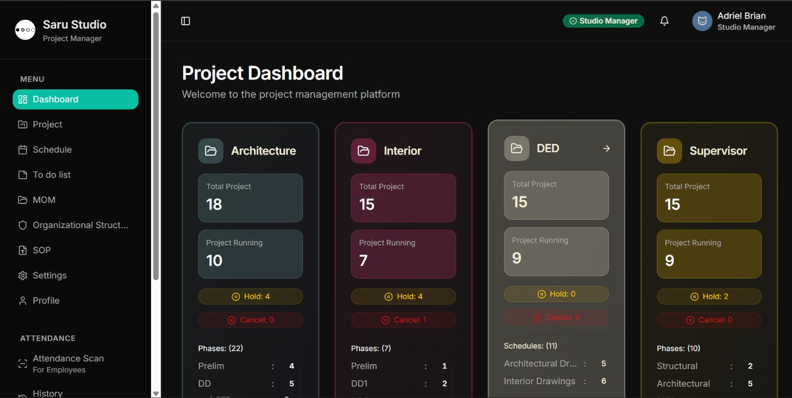

SARU STUDIO merupakan proyek Web Application yang dikembangkan untuk Saru Studio. Implementasi diarahkan pada kebutuhan operasional klien dengan struktur antarmuka yang responsif dan teknologi yang sesuai dengan ruang lingkup proyek.

Pengembangan mencakup perancangan antarmuka, integrasi fitur, optimasi untuk berbagai ukuran layar, serta penerapan komponen teknis sesuai kebutuhan sistem. Detail teknologi proyek tersedia pada panel informasi.